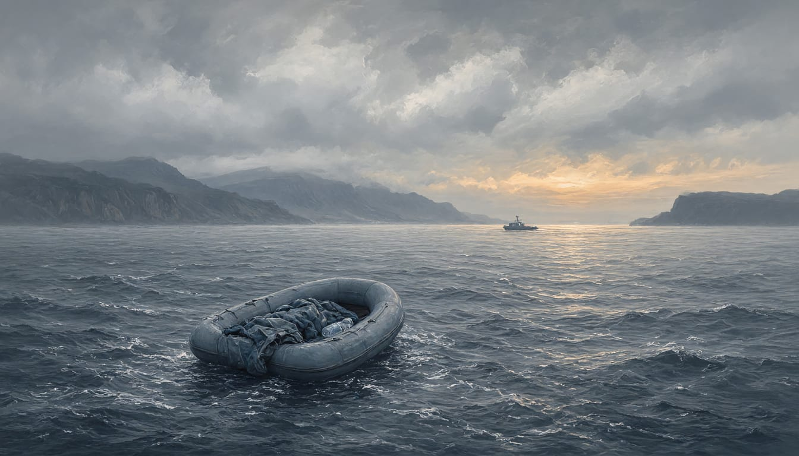

At least 20 migrants dead after two boats found off southern Crete
The Greek coastguard rescued 46 people from the two boats and two people are missing, while Frontex teams picked up dozens more on Monday. The deputy migration minister said cooperation with eastern Libya was gone and flows had increased as a result.
Correction: An earlier version left out a second boat, found off Crete early on Monday 9 November with 12 dead and 18 survivors, and placed Monday's details with the boat found on Saturday.

At least 20 migrants are dead after the Greek coastguard recovered bodies from two boats off southern Crete. Eight died on a boat found on Saturday evening, 7 November, from which the coastguard rescued 28 refugees and migrants; two people are missing. Early on Monday, 9 November, a coastguard vessel recovered 12 more bodies and rescued 18 people from a dinghy spotted by a Moroccan-flagged container ship. In two separate rescues on Monday, teams from Frontex, the EU border and coast guard agency, picked up about 47 and about 40 more migrants. Two Sudanese nationals aged 28 and 16 were arrested as suspected smugglers.
The deputy migration minister, Sevi Voloudaki, said that in recent days the cooperation that had existed with eastern Libya was gone, and that flows had increased as a result. She said Migration Minister Pleuris would announce within days, in cooperation with other EU member states, an initiative for the creation of so-called return hubs in a country outside Europe. Frontex said in October 2026 that the Libya to Crete corridor was the busiest section of the eastern Mediterranean route. It said this placed the corridor ahead of the eastern Aegean islands and the land border with Turkey. Frontex added that the eastern Mediterranean was the busiest route for migrants entering the EU, although crossings were down by a third so far this year.
Greece's Joint Rescue Coordination Centre, which coordinates search and rescue at sea, coordinated the first of the two Frontex operations. A Frontex aircraft spotted one boat 30 nautical miles south of Kali Limenes; a Frontex unmanned aerial vehicle detected the other 31 south-east of the islet. Frontex rescue teams picked up the people on both boats and brought them to Kali Limenes.
Survivors of the Saturday boat told the coastguard that two more people had fallen into the sea. One of four survivors of the Monday dinghy who were taken to hospital later died. A case file was opened against the two Sudanese nationals, charged with illegal entry, facilitating illegal entry, forming a gang and fatal exposure. Voloudaki spoke of people who are victims of smuggling networks. She referred to at least 20 migrants found dead in Crete.
Voloudaki said that if the effort does not succeed within a short time, much stricter measures will be taken. She said these would be either those used last summer in similar cases, which she said showed they worked, or others. Greek authorities said one of the boats may have spent days at sea, unable to reach shore in strong winds. Accounts of the weather differ: one gives good or favourable conditions, the other gale-force winds of 6 to 7 on the Beaufort scale. Al Jazeera and The National both noted that the cause of the deaths was not immediately clear. How long it drifted remains an open question.